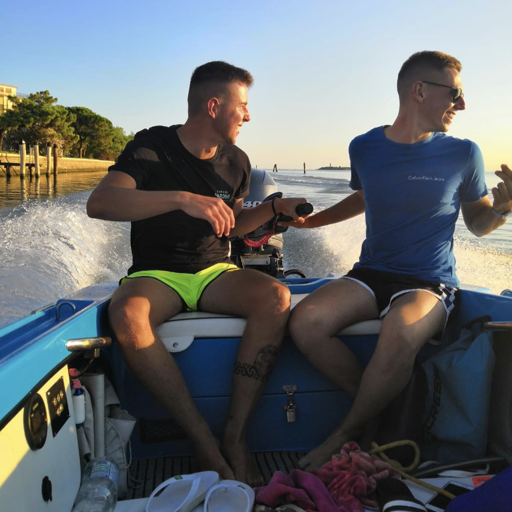
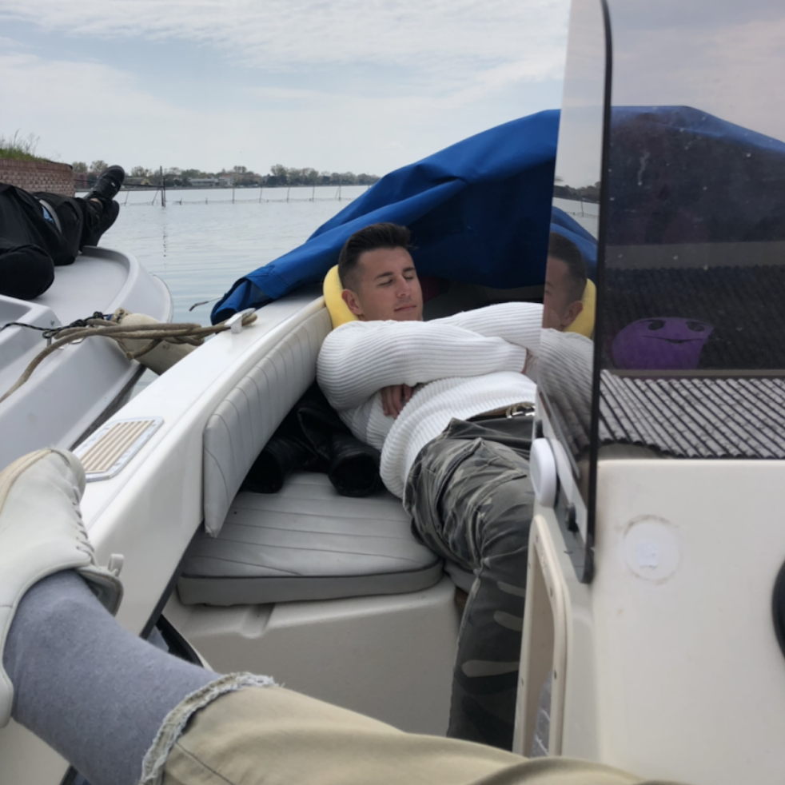
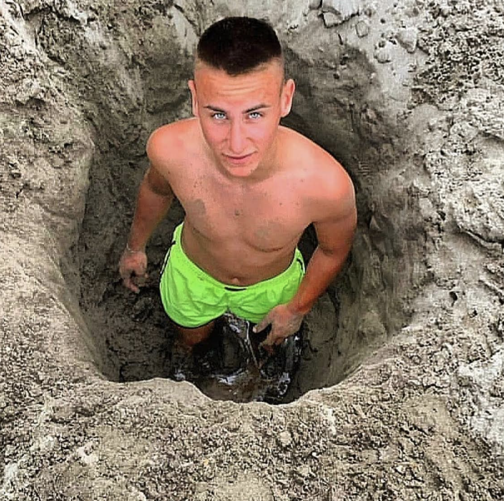
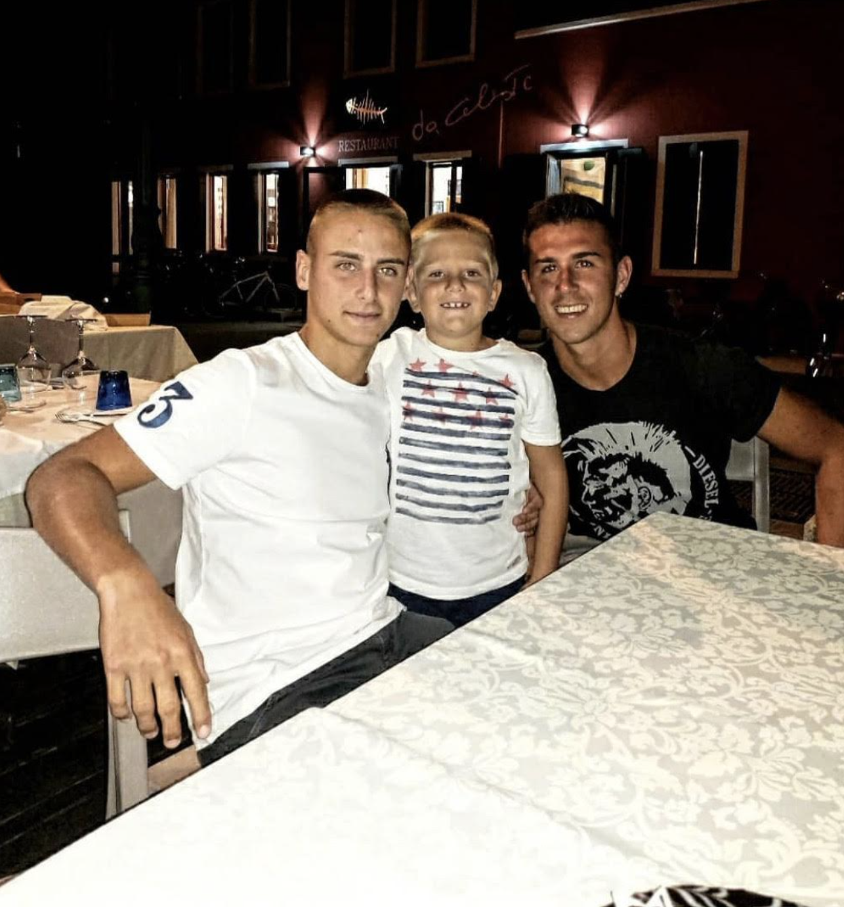

Here's Niccolò. He loves taking boatbarca rides with friends, probably he will take you to one, but don't let him driveguidare . Let other people drive.

Also because after lunchpranzo he's always tired and wants to sleep. If the boat stops for just 20 minutes, he lets the wavesonde cuddle him.
Dennis, instead, his twingemello , is more active. He would want to go to the beach and dig extremely deep whole with his bare hands. And you love to help him.

For the eveningsera , during weekend, they always want to eat outside with your little familyfamiglia friend Luca which you treat as your cousin.

Click on "Final" if you want to continue meeting people and visiting Pellestrina.
Or click "Go back" if you want to relive some island experiences.